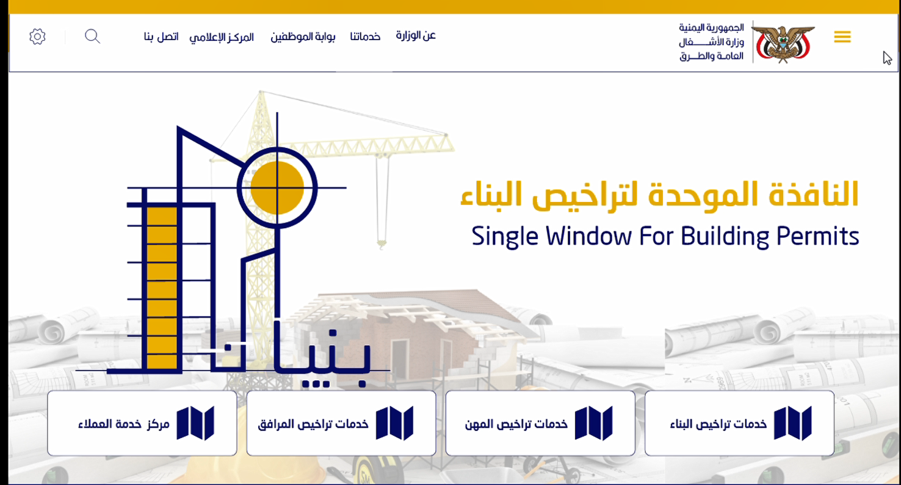
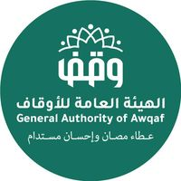

05 / ACCELERATOR APPLICATION
تقديم مدمجداخل المنصة
استمارة مسرّعة وثبة من داخل المنصة
تعبئة استمارة التقديم لمسرّعة الأعمال وثبة - الدفعة الثالثة مباشرة من الموقع، مع إمكانية حفظ المسودة ورفع المرفقات.
ابدأ التقديمفي أزال سوفت، نحوّل الأفكار إلى حلول تقنية ذكية تساعد المؤسسات على التطور، وتُسهّل حياة الناس.
نؤمن بأن الحلول الرقمية الجيدة تبدأ بفهم الاحتياج، وتنتهي بتجربة أسهل وأثر أكبر.
من الفكرة إلى الواقع، نصمم حلولاً تستجيب للاحتياجات الحقيقية.
تعبئة استمارة التقديم لمسرّعة الأعمال وثبة - الدفعة الثالثة مباشرة من الموقع، مع إمكانية حفظ المسودة ورفع المرفقات.
ابدأ التقديم
منصة رقمية تجمع 32 خدمة لمكاتب الأشغال في اليمن، لتسهيل الوصول إلى الخدمات وتنظيم إجراءاتها.

حل رقمي للإدارة العامة للاستثمار في الهيئة العامة للأوقاف، يشمل تصنيف الفرص الاستثمارية وخرائطها الرقمية.
استفسر عن المشروعمنصة رقمية لإدارة بيانات الآبار في اليمن، نحو رؤية أوضح وتنظيم أفضل للموارد المائية.
منهجية عامة نسترشد بها في تطوير الحلول، وتُكيّف مراحلها حسب احتياجات كل مشروع.
دراسة الاحتياجات وتحديد أهداف المشروع ومتطلباته.
تصميم الحل وتجربة المستخدم ووضع خطة العمل.
بناء المنصة وربط مكوناتها والأنظمة ذات العلاقة.
اختبار الوظائف وتجهيز الحل للاستخدام والنشر.
متابعة الأداء وتحسين الحل وفق الاحتياجات.
نوظّف التقنية لبناء تجارب رقمية تلبي احتياجات مؤسستك.
منصات وحلول مصممة لتبسيط الأعمال وتحسين الوصول إلى الخدمات.
نساعد المؤسسات على الانتقال إلى إجراءات رقمية أكثر سلاسة وكفاءة.
حلول تنظم المعلومات وتمنحك رؤية أوضح لدعم اتخاذ القرار.
أنظمة مرنة تلائم احتياجات العمل وتتطور مع تطلعات مؤسستك.
أزال سوفت شركة للحلول الرقمية، نعمل على تطوير منصات وأنظمة تساعد المؤسسات على تقديم خدمات أفضل وبناء مستقبل أكثر اتصالاً.
نجمع بين فهم احتياجات عملائنا والتفكير الإبداعي لنحوّل التحديات إلى فرص حقيقية للنمو والتطور.
محطات من أعمال أزال سوفت والمسيرة المهنية لمؤسسها ومديرها، عبدالواحد عبدالكريم الجمالي.
اختير مشروع أزال سوفت لإدارة المياه ضمن أفضل 30 مشروعاً حول العالم من قبل مركز الشباب العربي في أبوظبي.
مركز الشباب العربي · أبوظبيحقق مشروع النافذة الموحدة لتراخيص البناء المركز الرابع من بين 813 مشروعاً متقدماً في المسابقة الوطنية لرواد المشاريع الإبداعية، الموسم الخامس.
الهيئة العليا للعلوم والتكنولوجيا والابتكارتكريم عبدالواحد الجمالي ضمن مبادرة مليون مبرمج عربي، تقديراً لدوره في التدريب ودعم المشاركين.
اقرأ خبر التكريم · مؤسسة دبي للمستقبلالمشاركة كمدرب ومطور، إلى جانب إكمال مسار تطوير الويب المتكامل ضمن المبادرة.
مبادرة مليون مبرمج عربي · Udacityوفّرنا استمارة التقديم الرسمية لمسرّعة وثبة داخل الموقع، لتعبئتها ورفع المرفقات المطلوبة في مكان واحد، مع إمكانية فتحها في صفحة مستقلة عند الحاجة.
كل مشروع عظيم يبدأ بخطوة. أخبرنا عن فكرتك وجهّز رسالتك للتواصل مع فريق أزال سوفت.